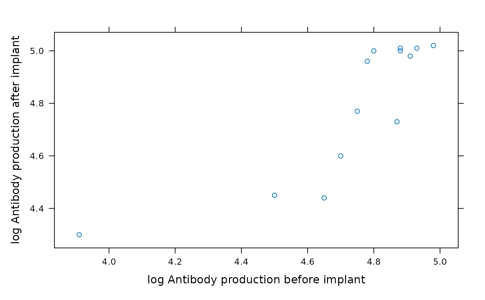

Testosterone Levels in Blackbirds
Blackbirds.RdExperimental manipulation of testosterone levels in male Red-winged Blackbirds (Agelaius phoeniceus) and resulting changes in antibody levels
Format
A data frame with 13 observations on the following 6 variables.
- before
a numeric vector
- after
a numeric vector
- log.before
a numeric vector
- log.after
a numeric vector
- diff.in.logs
a numeric vector
- diff
a numeric vector
Source
Hasselquist, D., J.A. Marsh, P.W. Sherman, and J.C. Wingfield. 1999. Is avian immunocompetence suppressed by testosterone? Behavioral Ecology and Sociobiology 45: 167-175.
Examples
Blackbirds
#> before after log.before log.after diff.in.logs diff
#> 1 105 85 4.65 4.44 0.21 20
#> 2 50 74 3.91 4.30 -0.39 -24
#> 3 136 145 4.91 4.98 -0.07 -9
#> 4 90 86 4.50 4.45 0.05 4
#> 5 122 148 4.80 5.00 -0.20 -26
#> 6 132 148 4.88 5.00 -0.12 -16
#> 7 131 150 4.88 5.01 -0.13 -19
#> 8 119 142 4.78 4.96 -0.18 -23
#> 9 145 151 4.98 5.02 -0.04 -6
#> 10 130 113 4.87 4.73 0.14 17
#> 11 116 118 4.75 4.77 -0.02 -2
#> 12 110 99 4.70 4.60 0.10 11
#> 13 138 150 4.93 5.01 -0.08 -12
xyplot(log.after ~ log.before, data = Blackbirds,
ylab = "log Antibody production after implant",
xlab = "log Antibody production before implant"
)
